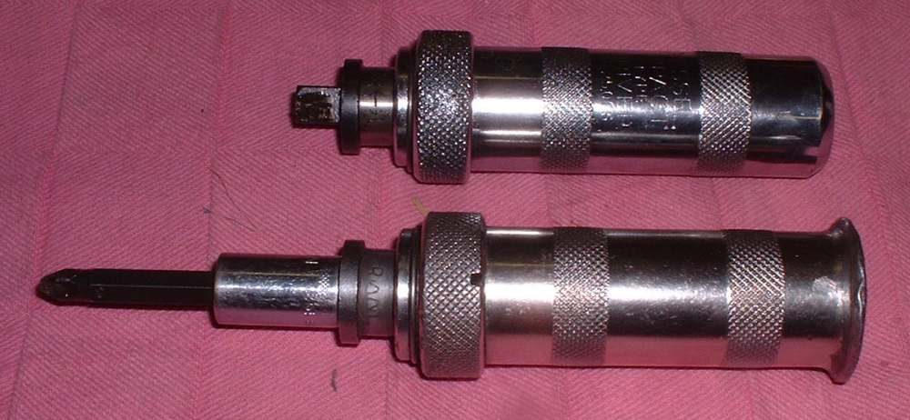

Cross-head steel screws in aluminium engine cases often seize over the years. A normal screwdriver then slips and chews the head. A hand impact driver turns the screw with a hammer blow while pressing the bit into the head, so the screw comes out without damage. It is often the first special tool a home mechanic needs.
Safety
- Wear eye protection. Bits and rust can fly.
- Support the part. The hammer blow must not break a cast case, a cam cap or a cover.
- Keep fingers clear of the hammer strike.
You need
- A hand impact driver (square drive) and bits that fit the screw heads exactly.
- A hammer.
- Valve grinding paste or very fine sand, for a worn head.
- A drill and bits, as a last resort.
Steps
- Clean the screw head. Dirt stops the bit seating.
- Fit the bit that fills the recess with no play. A bit that is too small slips and ruins the head.
- Put the driver on the screw. Turn its body in the direction you want the screw to go (anticlockwise to loosen). The tool twists a little against the spring.
- Hold it square and press firmly. Hit the flat end of the driver once, hard, with the hammer. The screw should break free.
- If the head is already chewed and the bit slips, put a little grinding paste or fine sand in the recess so the bit grips.
- Support the part behind the screw with a block or your hand, so it does not take the full blow.
- If the case is thin, fragile or part of a bearing support, do not hammer. Drill the screw head off instead, and remove the remaining stud with pliers.
- No impact driver? Use a screwdriver with a shaft that runs right through the handle. Strike its end with a hammer several times before turning, and twist as you strike. This is a poor second choice.
- Fit new screws with a smear of anti-seize or the thread lock your manual names, to the tightness the manual gives.
Check your work
- The screw is out with its head intact, and the threads in the case are clean.
- No new crack in the surrounding part. Look closely around the hole.
If it did not fix the problem
- Head destroyed or screw snapped: Remove a rounded, seized or broken fastener.
- Threads damaged: ask a workshop to clean or repair them. A tap can clean light damage.